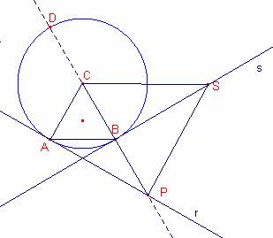

Problema 298
Construye un triángulo equilátero ABC y la
circunferencia (C) de centro C que pasa por B.
La circunferencia (C) ¿pasa por A?, ¿porqué?
Construye la tangente a la circunferencia (C) por el
punto A. Corta a la recta BC en el punto P.
Construye la tangente por B a la circunferencia (C).
Sea S un punto cualquiera de esta tangente. ¿qué
puedes decir del triángulo SPC? Justifícalo cuidadosamente.
Clapponi, P. (1997): Activité… deux tangentes.. Petit X 44, pag.
50. [Clapponi es un seudónimo de Philippe
Clarou - Bernard Capponi].
Solución de Ricard Peiró:

a)Por ser el triángulo equilátero entonces, la circunferencia de centro C que pasa
por B también pasa por A.
b)
Sea la recta r tangente a la circunferencia en el
punto A.
La recta r es perpendicular al radio .
Sea P la intersección de la recta r y la prolongación
del lado  .
.
El ángulo es exterior a la circunferencia
por tanto su medida es la semidiferencia de los arcos
que abarca.
La recta BC talla la circunferencia en el punto D.
es
un diámetro.
por
ser el triángulo rectángulo.
.
Entonces, .
El triángulo es rectángulo,
. Además .
Entonces, .
Como , tenemos que .
Sea la recta s tangente a la circunferencia en el
punto B.
La recta s es perpendicular a , además B es el punto medio de .
Entonces, la recta s es mediatriz del segmento .
Sea S un punto de la recta s, por pertenecer a la
mediatriz. Entonces el triángulo es isósceles.